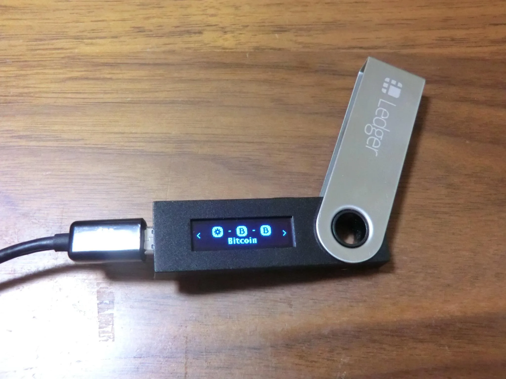

Installation, Setup, Security, Ledger Live, Electrum
Update on 25 May 2023: Ledger Recovery key extraction.

Introduction
 Testers only!
Testers only!
 Documentation status: Successful connection to a Ledger hardware wallet
from within a Kicksecure
VirtualBox VM confirmed on 25 February 2021.
Documentation status: Successful connection to a Ledger hardware wallet
from within a Kicksecure
VirtualBox VM confirmed on 25 February 2021.
 The concepts in this chapter are still valid but the applications and
corresponding installation instructions may have changed in the
meantime.
The concepts in this chapter are still valid but the applications and
corresponding installation instructions may have changed in the
meantime.
Ledger wallets are a special type of commercial Bitcoin wallet whereby a user's private keys are stored in a secure hardware device. Other commercial alternatives include Pi Wallet, TREZOR, BWALLET, KeepKey, Opendime, CoolWallet and others.
The major advantages of hardware wallets over software wallets include: [1]
- Usually private keys are stored in a protected area of a microcontroller, and cannot be transferred out of the device in plaintext.
- Resistance to computer viruses that target theft from software wallets.
- More secure and interactive than paper wallets that require importation to software.
- Usually software on the device is open source.
The main principle is that cryptographic secrets (private keys) are fully isolated from easy-to-hack computers or smartphones. Ledger wallets use secure chips that are similar to the technology used in chip and PIN payment cards or SIM cards. [2]
Security Factors
Essentials
Learn from Ledger and/or other authoritative sources:
- What is a seed phrase?
- Ledger Phishing Scam Targets Crypto Hardware Wallet Users
 Never enter the seed phrase on any electronic device except the hardware
wallet!
Never enter the seed phrase on any electronic device except the hardware
wallet!
Security Risks
 Warning: Hardware wallets are not bulletproof. The user
must be sure to purchase a good-quality, authentic device manufactured
by a trustworthy and technically competent company with a good
reputation in security.
Warning: Hardware wallets are not bulletproof. The user
must be sure to purchase a good-quality, authentic device manufactured
by a trustworthy and technically competent company with a good
reputation in security.
Potential risks of hardware wallets include: [3]
- Compromised production process: Hardware backdoors could be introduced via intentional or unintentional actions that leave security holes in the final product.
- Device interdiction: No hardware wallet solution can deal with the threat of government programs that intercept hardware and modify them in transit to introduce backdoors.
- Imperfect implementation: If bugs are present in the software, firmware or hardware, then attackers may be able to gain unauthorized access to the hardware wallet.
- Insecure Random Number Generator (RNG): Security relies on true randomness being generated by the source of entropy for the RNG, since it generates the wallet's private keys. This is hard to verify, and attackers may be able to recreate wallet keys if the RNG is insecure. [4]
- Malware swapping recipient Bitcoin addresses: Malware on a PC could potentially trick the user into sending Bitcoin to the wrong address. Multi-factor confirmation of a recipient's Bitcoin address mitigates this risk.
Despite these risks, hardware wallets are considered a higher security solution than software wallets, since the latter must make private keys available in plain text in the computer's memory when transactions are signed -- any compromise by Bitcoin-targeting malware would enable theft of Bitcoins.
Seed Backup Security
It is definitely safer to have at least two Ledger hardware wallets. During initial setup, the Ledger will ask you to confirm the Secret Recovery Phrase by selecting the requested words in order (word #1 through word #24). This helps to verify the phrase was backed up correctly. On the other hand, two Ledgers using the same seed should generate the same addresses, which proves the seed was correctly backed up.
Seed testing applications are available like BOLOS Seed Utility App. [5] [6] It is probably safer to avoid these tools since they are maintained by a third party and this adds complexity to the procedure.
Another alternative is to:
- note some generated addresses
- reset the Ledger
- set up again with the seed and see if it still uses the same addresses
Wallet Testing Security
Before storing any significant funds in a wallet, it is recommended to first test sending a small amount there and then trying to send it back. The reason is software bugs could potentially lead to the presentation of an address where the user does not own the corresponding private key.
The threat of losing funds due to software bugs is not just hypothetical. For instance, this user utilizing MyEtherWallet.com lost over one thousand dollars due to a historical bug in the Ethereum Javascript implementation.
Threat Model
 Highly recommended reading: Hardware Wallet Security
Highly recommended reading: Hardware Wallet Security
Installation
USB
 A USB port is required if using the Nano S, Nano or HW1 Ledger hardware
wallets.
A USB port is required if using the Nano S, Nano or HW1 Ledger hardware
wallets.
 Ledger USB device will not be detected by the computer before the PIN
has been entered. [7] Before proceeding:
Ledger USB device will not be detected by the computer before the PIN
has been entered. [7] Before proceeding:
- Physically connect the Ledger hardware wallet to a USB port.
- Turn on Ledger.
- Enter the PIN on the Ledger.
Virtualizer Specific Settings
VirtualBox
Kicksecure VirtualBox users only:
 VirtualBox 7 or higher is required.
VirtualBox 7 or higher is required.
Add the Ledger hardware wallet to the virtual machine (VM).
- Power off the VM.
Virtual machine->Menu->Settings->USB->USB-> checkEnable USB Controller-> press+-> checkLedger->OK- Power on the VM.
- Repeat the above after you open an app on the Ledger device, i.e.: Bitcoin, Ethereum, Litecoin etc. It turns out that the Ledger device has a distinct hardware ID for each app you open on the hardware wallet.
VirtualBox Oracle VM VirtualBox Extension Pack not required.
KVM
Kicksecure KVM users only:
Add the Ledger hardware wallet to the virtual machine (VM).
Qubes
Kicksecure for Qubes users note:
For better usability, it is discouraged to start with a Ledger hardware wallet. First learn how to pass any other, "simpler" USB device to an AppVM and attempt that procedure in order to iron out any eventual Qubes USBVM issues. Any eventual Qubes USBVM issues are Qubes support issues. Not Kicksecure support issues.
Install Qubes USB Proxy. This step is mandatory for Qubes users. [8]
Install package(s) qubes-usb-proxy following these
instructions:
1 Platform specific notice.
- Kicksecure: No special notice.
- Kicksecure-Qubes: In Template.
2 Update the package lists and upgrade the system.
sudo apt update && sudo apt full-upgrade
3
Install the qubes-usb-proxy package(s).
Using apt command line --no-install-recommends option is in
most cases optional.
sudo apt install --no-install-recommends qubes-usb-proxy
4 Platform specific notice.
- Kicksecure: No special notice.
- Kicksecure-Qubes: Shut down Template and restart App Qubes based on it as per Qubes Template Modification.
5 Done.
The procedure of installing package(s) qubes-usb-proxy
is complete.
Electrum Installation
This step is optional and only necessary if you intend to use Electrum.
Electrum is installed by default in Kicksecure, but additional packages are required for hardware wallet support. [9]
Prefer Debian packages. [10]
Install package(s) python3-hidapi python3-btchip
following these instructions:
1 Platform specific notice.
- Kicksecure: No special notice.
- Kicksecure-Qubes: In Template.
2 Update the package lists and upgrade the system.
sudo apt update && sudo apt full-upgrade
3
Install the python3-hidapi python3-btchip package(s).
Using apt command line --no-install-recommends option is in
most cases optional.
sudo apt install --no-install-recommends python3-hidapi python3-btchip
4 Platform specific notice.
- Kicksecure: No special notice.
- Kicksecure-Qubes: Shut down Template and restart App Qubes based on it as per Qubes Template Modification.
5 Done.
The procedure of installing package(s)
python3-hidapi python3-btchip is complete.
https://packages.debian.org/forky/python3-ledger-bitcoin might be required but unavailable in Debian trixie?
udev Rules
1. Open a terminal.
2. Install package ledger-wallets-udev.
[12]
Install package(s) ledger-wallets-udev following these
instructions:
1 Platform specific notice.
- Kicksecure: No special notice.
- Kicksecure-Qubes: In Template.
2 Update the package lists and upgrade the system.
sudo apt update && sudo apt full-upgrade
3
Install the ledger-wallets-udev package(s).
Using apt command line --no-install-recommends option is in
most cases optional.
sudo apt install --no-install-recommends ledger-wallets-udev
4 Platform specific notice.
- Kicksecure: No special notice.
- Kicksecure-Qubes: Shut down Template and restart App Qubes based on it as per Qubes Template Modification.
5 Done.
The procedure of installing package(s)
ledger-wallets-udev is complete.
3. Kicksecure users only:
sudo udevadm control --reload-rules
sudo udevadm trigger
A reboot is usually not required for Kicksecure; skip the next two steps to shut down and restart the VM.
4. Shut down VM.
5. Start the VM which is supposed to interact with
the Ledger hardware wallet, which we will call
Ledger VM.
6. Done.
ledger-wallets-udev udev rules were installed and udev
was reloaded.
Ledger Live Application Installation
Introduction
- Digital signatures are a tool enhancing download security. They are commonly used across the internet and nothing special to worry about.
- Optional, not required: Digital signatures are optional and not mandatory for using Kicksecure, but an extra security measure for advanced users. If you've never used them before, it might be overwhelming to look into them at this stage. Just ignore them for now.
- Learn more: Curious? If you are interested in becoming more familiar with advanced computer security concepts, you can learn more about digital signatures here: Verifying Software Signatures
 Ledger Live is now known as Ledger Wallet (formerly Ledger Live).
Ledger Live is now known as Ledger Wallet (formerly Ledger Live).
 Two download methods are available.
Two download methods are available.
- A) Simplified: Download instructions on this wiki page are simplified and less secure.
- B) Secure: Higher difficulty, but more secure download and digital software signature verification instructions are available on the How-to: Ledger Live Download with Digital Signature Verification wiki page. Apply those instructions and then return to this page.
Download
scurl-download https://download.live.ledger.com/ledger-live-desktop-2.142.0-linux-x86_64.AppImage
Make Executable
Make the Ledger Live AppImage executable.
chmod +x ledger-live-desktop-2.142.0-linux-x86_64.AppImage
Ledger Live Start Menu Entry
 This step is optional.
This step is optional.
1. Create folder
~/.local/share/applications.
mkdir -p ~/.local/share/applications
2. Open file
~/.local/share/applications/ledger.desktop in a text editor of your
choice as a regular, non-root user.
If you are using a graphical environment, run. featherpad ~/.local/share/applications/ledger.desktop
If you are using a terminal, run. nano ~/.local/share/applications/ledger.desktop
3. Paste the following contents.
[Desktop Entry] Name=Ledger Live Comment=Ledger Live - Desktop Exec=bash -c '~/ledger-live-desktop-*-linux-x86_64.AppImage' Terminal=false Type=Application Icon=money-manager-ex StartupWMClass=Ledger Live MimeType=x-scheme-handler/ledgerhq; Categories=Finance;
4. Save.
5. Kicksecure-Qubes only: perform platform-specific steps.
In dom0:
- Refresh Qubes
dom0appmenu:VM settings->Applications->Refresh Applications - Add desktop shortcut.
Usage
Ledger Live
- Physically connect the Ledger hardware wallet to a USB port.
- Enter the PIN on the Ledger.
- Start the
Ledger VM.
Start Ledger Live.
./ledger-live-desktop-2.142.0-linux-x86_64.AppImage
For further actions, refer to upstream Ledger usage instructions.
Electrum
Same basic steps as for Ledger Live but then start Electrum, not Ledger Live.
Do not attempt to run Electrum and Ledger Live at the same time. This is a Ledger limitation, unrelated to Kicksecure.
An Electrum wallet will only show legacy Bitcoin addresses and their balances or SegWit wallet Bitcoin addresses and their balances, not both. It is possible to have multiple Electrum wallets and switch between them.
Electrum will ask for derivation path.
- The default is
m/44'/0'/0'for legacy Bitcoin addresses. - You should use
m/49'/0'/0'for SegWit Bitcoin addresses.
Troubleshooting
BIOS
The USB device might be passed to the Ledger VM, but
Ledger applications may not recognize the Ledger hardware wallet. If
that occurs, try the following in BIOS settings:
- Disable
Legacy USB Support - Disable
XHCI Pre-Boot Mode - Attempt flipping other USB-related BIOS options
It is unnecessary to reinstall Qubes.
Ledger
To troubleshoot Ledger problems, try the following:
- Use the
Managertab in Ledger Live first. - Qubes users note: Update the firmware of the Ledger hardware wallet by connecting it to a non-Qubes Linux computer (where connections are possible with Ledger Live).
Try with Debian First
Issues which are not caused by Kicksecure:
- Using Ledger on (Debian) Linux can be challenging.
- Using USB devices with VirtualBox can be challenging.
- Using Ledger with a virtualizer such as VirtualBox can be challenging.
Therefore, as per Self Support First Policy:
- Learn how to use Ledger on a Debian host.
- Learn how to use USB devices with your choice of virtualizer.
- Learn how to use Ledger with Debian inside VirtualBox.
Only after completing these steps, try to use Ledger in a Kicksecure VM.
Qubes R4
The Qubes R4 USB widget formerly had bugs such as showing the USB
device was connected to a VM while qvm-usb -- the command
line authority whose judgment should be trusted more -- disagreed or
showed the same USB device more than once in the menu.
[13]
If similar issues re-emerge, follow these steps.
1. Physically connect the Ledger hardware wallet to
a USB port.
2. Run the following command to get an overview of USB
devices detected by Qubes.
qvm-usb
3. Check the output is similar to the following.
BACKEND:DEVID DESCRIPTION USED BY
sys-usb:2-1.1 Logitech_USB_Keyboard
sys-usb:2-1.2 PixArt_USB_Optical_Mouse
sys-usb:2-1.4 Ledger_Nano_S_00014. Use the following command to connect the Ledger hardware wallet to the preferred VM.
Replace ledger-debian with the actual name of the
VM.
qvm-usb attach ledger-debian sys-usb:2-1.4
5. Done.
The Ledger hardware wallet was attached to the selected VM using
qvm-usb.
See also: Dev/Ledger Hardware Wallet.
Issues
Forum Discussion
- general: https://forums.whonix.org/t/ledger-nano-s-support/8521/2
- KVM-specific: https://forums.whonix.org/t/ledger-nano-s-no-device-found/10934
Donations
After setting up a hardware wallet, please consider making a donation to Kicksecure to keep it running for many years to come.
 Donate Bitcoin (BTC) to Kicksecure.
Donate Bitcoin (BTC) to Kicksecure.
3DaJWfHyLv4RVnvMD7K2Mz2AX2r3fwiQwV

 Donate Monero (XMR) to Kicksecure.
Donate Monero (XMR) to Kicksecure.
84ozcSohQfoV6nRgGfaQ8uBvWphXAH8zDTTuotVnJWF1JMNQfvgNFdbEo4ZnJ9hxPMeYfJuUoWGH3MRaXCfbYk8sFFgm4XL

Footnotes
- https://en.bitcoin.it/wiki/Hardware_wallet
- https://www.ledger.com/ledger-wallets-always-safe-never-sorry
- https://en.bitcoin.it/wiki/Hardware_wallet
- The attacker generates pseudo-randomness that is indistinguishable from true randomness, but is still predictable.
This repository contains an application for the Ledger Nano S that allows the user to verify the backup of their BIP 39 mnemonic by comparing it to the master seed stored on the device.
- https://www.reddit.com/r/ledgerwallet/comments/6ez4qs/ledger_nano_s_seed_utility_app_released/
- This is probably because Ledger does not announce itself before that.
- See: Problem with adding USB device to a VM.
- https://electrum.readthedocs.io/en/latest/hardware-linux.html
- * https://packages.debian.org/python3-hidapi * https://packages.debian.org/python3-btchip
- In most cases, device permissions are handled automatically. If the
Ledger device is not detected, install
ledger-wallets-udev, see below. - https://packages.debian.org/ledger-wallets-udev
- USB devices shown multiple times in devices popup menu #3266